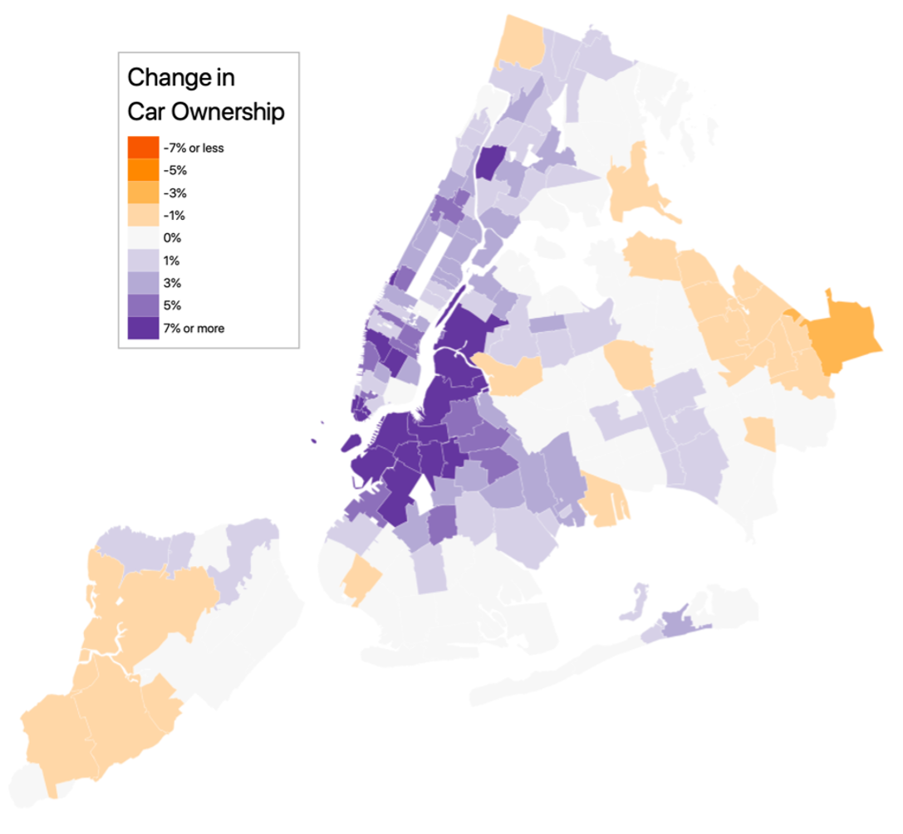

For millions of New Yorkers, the pandemic changed one of the most fundamental aspects of daily life: how they got around. Suddenly, they found themselves couped up in their homes, avoiding the public transit they once took for granted. Terrified of COVID-19, many abandoned the city’s subways and buses, instead opting to walk, ride bikes and take the driver’s seat to get where they needed to go.
Megan Cogguillo, 27, who bought a car last July while living in Brooklyn’s Windsor Terrace neighborhood, was one of them. She had spent four long months alone in her apartment, with no end in sight. She was terrified of taking the subway and being enclosed in a box with strangers who might have the virus.
“I felt so trapped in my apartment and my neighborhood,” said Cogguillo.
The combination of fear, loneliness and boredom prompted her to look for a car, something she never expected to do when she moved to Brooklyn five years ago, she said. For her, the ability to take the subway at any hour was one of the biggest draws of living in New York City.
“It seemed like such a hassle to park—to move your car constantly or pay a fortune for a garage,” said Cogguillo, who is 27 years old and works in operations at a financial services firm downtown. “Before the pandemic, it didn’t seem worth it at all.”
On the day she felt she’d had enough, Cogguillo started looking for her car—something used and compact. She found a 2017 Honda Fit with 30,000 miles on it for $14,000. Just a couple days later, she picked up her new ride.
Cogguillo was far the only one in her neighborhood of Park Slope or elsewhere in New York City to make that decision. In the ZIP code she was living in, there were just over a thousand more personal cars registered a year into the pandemic than when it began. That’s almost 10% more than before.
Unlike any event in recent history, COVID-19 forced New Yorkers to reconsider the convenient modes of public transportation they had taken for granted. Suddenly, the risk of infection played into the calculus of deciding how to get around. Suddenly, packing into a crowded rush hour train shifted from an inconvenience to a real source of anxiety.
New Yorkers adapted.
Before the pandemic, the subways and buses were a bustling part of the fabric of New York City life. On an average weekday in 2019, over 5 million people would swipe into the subway and another 2 million would ride a bus. But in 2020, those figures fell by half, according to MTA ridership data.
By the end of the year, fewer people had ridden the subway in 2020 than in any year since at least 1910. In 2020, passengers took 639.5 million subway rides, according to the MTA. That’s compared to 725 million in 1910.
A detailed analysis of multiple data sources covering how New Yorkers get around found that many New Yorkers abandoned shared modes of transit during the height of the pandemic, instead choosing private ways of getting around like driving cars, riding bikes, and walking to travel without worrying about the virus.
Here are some key details about transportation has played out during the height of the COVID-19 pandemic:
Public transit floundered as many adopted private forms of transportation like driving cars and riding bikes.
A standstill: In the earliest days of the pandemic, subway ridership fell by over 90 percent, according to MTA ridership data. That’s around 4 million fewer rides per day. Bus ridership fell by over 75 percent.
Transit recovery remains elusive: As of early August, there were less than half of the riders on a typical day on a similar day pre-pandemic. While recovery varied by station, all but two stops had less than 60 percent of their previous ridership by May.
New York as a car city: There were more personal cars registered across the five boroughs a year into COVID-19 than before. This was despite the city losing a net 89,000 residents over the course of the year, according to the Brookings Institution. Car registrations were especially concentrated in the wealthier Brooklyn neighborhoods near the Hudson River and Prospect Park. Prospect Heights had the most dramatic influx: 15 percent more on the road than before the pandemic.
More biking than ever: More New Yorkers chose bikes than ever, for leisure and to get where they needed to go. Rides on the Queensboro Bridge went up by over 36% in the year following the pandemic, from 1.24 million to 1.69 million, according to the NYC DOT’s bike counter data. Around Brooklyn’s Prospect Park, there were at least 24 percent more bikers.
Catastrophe for cabs: At their worst, yellow cab rides were down 95 percent compared to the previous month. Ride share services were down around 80 percent at the same time.
As the city inches toward post-pandemic life, COVID-19’s jolt to the system could have lasting consequences for transportation in New York. The pandemic fundamentally altered transportation preferences in a city organized around public transit.
Already, different modes of transportation have recovered unevenly. While the subway carries only half the passengers as it did before the pandemic, the city’s bridges and tunnels have returned to pre-COVID traffic.
“A lot of people have come to see the car as the best kind of personal protective equipment you can have,” said Mitchell Moss, Director of NYU Wagner School of Public Service’s Rudin Center for Transportation Policy and Management.
As offices reopen, more cars on the road could mean worse congestion than before. In some ways, it already has – according to a survey released this month by the Transportation Institute at Texas A&M University, New York surpassed Los Angeles in 2020 as the metropolitan with the worst gridlock.
“Even if people return to the subways and buses, they might not be using them as much as they did before because they have choices now,” said Moss.
In the long term, fewer paying MTA customers could bring more financial woes to a fragile transit system already in need of repairs.
The MTA lost billions in revenues from lost fares on empty subways in 2020 After losing billions in revenues from lost fares on empty subways, the agency is left strapped for cash. Typically, money from tolls and fares cover at least half of the MTA operating budget. For now, federal loans are making up the difference, but if ridership never recovers to pre-pandemic levels, public transit will be in trouble.
“Federal money has helped them get through the worst of the times,” said Moss. “But we don’t know what’s going to happen. It depends on whether and how ridership is resuming.”
In the years leading up to 2020, New York City prospered by all measures. Its population had been rising since the 1980s – up 7.7 percent from the previous decade, according to the U.S. Census Bureau. Median income had been rising steadily in the city since 2010. Crime had fallen to a historic low, according to the NYPD.
This prosperity led to an era of bustling public transit. Subway ridership peaked in 2015, when 1.76 billion people swiped into the subway, 21% more than in 2000. That figure plateaued through 2019.
But when the pandemic began to seriously hit New York City in March, that changed. The city nearly stood still, according to data released by the MTA.
On March 12, 2020, Mayor Bill de Blasio declared a state of emergency. Five days later, he ordered much of the city closed. Schools shuttered and shifted to remote learning for the semester. Bars and restaurants shut down, with exceptions for takeout and delivery. Many employers similarly went remote if they could or closed, except operations deemed essential like grocery stores, pharmacies, and hospitals.
In early to mid-April, COVID-19 fatalities peaked in New York City. Hundreds died each day. New Yorkers heard the sirens of ambulances in the street throughout the day and night. Officials put stay-at-home orders in place. Public transportation use rates to fall to their lowest numbers of the pandemic.
On April 12, the average fatality rate peaked, according to the New York Times, with 829 deaths attributed to the virus per day in the week prior across the five boroughs. The bus system lifted fares to limit contact between drivers and the riders.
A city standing still
Daily ridership data compared to comparable pre-pandemic day by transit system
Subway ridership would remain below 10 percent of its previous levels from the start of April until May 20. Buses lost almost eight in ten riders. The most drastic blow to the system was to commuter rails. Riders almost completely abandoned these trains at the height of the pandemic. Through April, the Long Island Railroad had only three riders to the previous year’s hundred. For the northern suburbs’ Metro-North Railroad, there were five.
Beata Jozwiak, a nursing assistant at Mount Sinai Hospital who lives in Ridgewood, Queens, took the subway to work throughout the entire pandemic. She recalls the desolation of the subway stations when she would come home from her evening shift at 11 p.m.
“In one way, it felt good because it wasn’t too many people,” she said. Jozwiak was especially impressed at the MTA’s efforts to keep the subway clean.
“But the other way, it was a little scary, because sometimes I was alone in the subway station. You never really knew if it was better to be alone or with someone around, because you never knew who would be with you at the subway station.”
At the Wall Street subway station, ridership in May 2020 was 96.7% below where it was the previous year. At Borough Hall in Brooklyn, it was 94.1% lower.
While the subway emptied throughout the city, the exodus was uneven across neighborhoods. In wealthier neighborhoods like Williamsburg and the Upper East and West Sides, there was only one person swiping into the subway for every ten before the pandemic. In areas of the Bronx and East Brooklyn, there were double to triple that.
Vivia Kelly, an assistant at a nursing home who works in Fordham in the Bronx, one of the neighborhoods where more people took public transit during the height of the pandemic, felt the same way. She took the bus throughout the entire pandemic. With much of the worst of the pandemic happening in nursing homes, she worried less about the journey.
“We had to go to work,” said Kelly. “There was nothing we could do. It was mostly frontline workers out, until later down the road when other people started coming out.”
But plenty of people did not feel as comfortable taking mass transit, instead opting to stay home or take alternate means of transportation if possible.
New York: A car city?
Thousands of New Yorkers like Megan Cogguillo bought cars in the city in the year following the pandemic. This is despite a net population loss of 89,000, according to estimates by the Brookings Institution.
Car registrations rise in most of the core of the city, especially in areas of Brooklyn
Car registrations were especially concentrated in certain neighborhoods in the core of the city. In lower Manhattan, waterfront Brooklyn and Long Island City, Queens, car registrations remain especially high compared to the year before the pandemic.
The change was most drastic in Brooklyn’s Prospect Heights neighborhood. There were 15% more cars on the road in the area one year after the pandemic began – up 1,170 cars. In Park Slope, where Cogguillo lived until last month when she moved to Astoria, registrations were up 9%. That’s 1,065 more personal cars on the road there.
Car registrations were also up throughout all of Manhattan.
Some neighborhoods, however, had a small decrease in car registration. These areas, in Staten Island and Eastern Queens, already relied on cars, according to Census Data.
After lockdown ended, passenger car registrations spiked beyond pre-pandemic levels
Registrations of private passenger cars by month
The state’s Department of Motor Vehicles, which was suspended from the end of March until May, saw higher numbers of car registrations during the summer than in previous years. When Cogguillo registered her car in July, so did 106,538 other New Yorkers.
In early August, seeing this trend towards private car ownership, Mayor Bill de Blasio even asked residents not to buy cars, declaring that cars were the past.
De Blasio’s directive did not work. Car dealerships in the tri-state area saw a boom in sales over the course of the pandemic. There was even a shortage in cars.
At Hillside Auto Mall in Jamaica, Queens, revenues were up by at least 30% compared to before the pandemic, according to Carlos Trujillo, a senior sales representative.
“Many buyers who had to commute were afraid,” said Trujillo. “They did not think the subways were safe or clean. People who never drove before were driving now – people who lived in the city for years without buying a car decided now was a good time to buy.”
Hillside Auto Mall saw a particular increase in sales when stimulus checks and tax refunds hit.
Benjamin Bergner, a 31-year-old who works at a nonprofit, bought a car in August of 2020 with his partner. They were living in the Lower East Side.
The biggest draw for them was doing outdoor activities and leaving New York City without much hassle. With indoor activities closed, they sought to do more hiking upstate. For certain trails and further out beaches, they felt they needed a car.
“We don’t like that in particular because we are environmentally conscious and sustainability is important to us, and those aren’t things cars are really good about,” said Bergman. “We figured we had to buy at least a hybrid car, to get one that was not really environmentally horrible.”
But while private cars became more popular during the pandemic, shared taxis did not. Cab rides plummeted in the April of the pandemic.
Neither yellow cabs nor rideshare services recovered to pre-pandemic consumption in 2020
Daily volume of rides in rideshares and yellow cabs in New York City (one week rolling average)
Yellow cabs, which service neighborhoods in Manhattan that suddenly had fewer workers and tourists, were especially devastated. In mid-April, taxi rides were down around 95% compared to the previous month.
Rides with services like Uber and Lyft, which cover the whole city, were down around 80% at the same time.
Taxi ridership hovered around half of the previous year’s figure as of the beginning of January. And while both seek to recover, rideshare services have regained more of their pre-pandemic market share than yellow cabs.
More biking than ever
As some New Yorkers bought cars, hundreds of thousands turned to biking as a safe way to get around during the pandemic. More New Yorkers biked in the months following the pandemic than at any point in the past five years as they searched for a covid-safe way to travel, exercise, and get out of their apartments.
Most East River bridges saw biking gains of at least 20% in the first year of the pandemic compared to the previous year
Difference in bikes counted by the NYC DOT’s automated counters, April 2020-March 2021
The New York City Department of Transportation, which uses automated bike counters to measure bike trips, saw increased ridership in many locations across the city. These included the Queensboro, Williamsburg and Manhattan bridge bike paths, which each saw at least 20% more riders in the twelve months following and Prospect Park West.
For the Manhattan Bridge, which is crossed by more cyclists than any other in the city, that meant 1.49 million riders in the first year of the pandemic compared to the prior year’s 1.35 million.
The Brooklyn Bridge, a popular tourist destination connected to the dormant financial district, was the only bridge on the East River to see fewer cyclists during the pandemic. It had 6% fewer rides than in the previous year.
Bikes were so in-demand that there was a shortage across the city. Carolyn Tyner, a teacher living in Flatbush, regrets not buying one sooner. Tyner, who didn’t take the subway at all from March to October 2020, couldn’t get a bike until that August.
“I messed up,” said Tyner, 25. “I had been thinking of buying a bike in February of 2020 and started looking. And then the pandemic hit and I really wished I had one. Bikes were sold out because people bought them so quickly,” said Tyner.
In the fall, Tyner had to return to teaching in person at her school in Sunset Park, Brooklyn, but she wasn’t ready for public transit. Instead, she preferred biking. It didn’t require her to go into an enclosed space with strangers.
Tyner found biking to be a lot faster—a breezy 25 minutes rather than 40. She enjoys never having to wait around for a subway or bus.
“I lived and worked in two low-income neighborhoods that were highly impacted by COVID-19, and I wasn’t going to add the additional risk of being packed onto a subway or a bus with people,” said Tyner. “I biked to work all fall, and then schools closed down in November, but when schools reopened in the spring, I biked to work. Now I ride my bike pretty much everywhere within Brooklyn.”
She did not take public transit at all from March until October, except for one occasion where she got stuck biking in a thunderstorm.
Even after the pandemic, Tyner said she plans to stick to biking.
While bike sales soared, so did rentals. For those who wanted to ride a bike but did not have their own, Citi Bike was especially helpful. The bike sharing system offers thousands of bikes parked around the city for just over $125 annually. They can take and park bikes between stations across four boroughs and Jersey City. Some Citi Bikes are even electric, with an engine assisting riders as they pedal.
As more people became willing to see friends, socialize outside, and with masks, Citi Bike’s ridership increased from a temporary lull during lockdown, peaking beyond pre-pandemic usage in the fall.
Most Citi Bike stations had more rides in March 2021 than the previous March, especially in Brooklyn
Percent change in Citi Bike rides per station (March 2020 to March 2021)
Despite the pandemic, the bikeshare service even installed hundreds of new stations throughout the city, expanding to new neighborhoods entirely. Last March, docks only went as far north as 130th Street in Manhattan. Now, they cover the entire island, as well as significant sections of the South and West Bronx. They expanded significantly into Astoria in Queens and Sunset Park in Brooklyn too.
“All of a sudden they are expanding to a lot of these places in Brooklyn that didn’t have them before,” said Tyner. “They used to only be in pricier neighborhoods."
New Yorkers used Citi Bikes differently during the pandemic, leading to much longer rides
Monthly median trip duration (minutes per ride)
The nature of Citi Bike rides changed, too: once the pandemic began, riders biked for longer and farther on average. This was likely because of more leisurely rides, as well as rides replacing subway journeys.
Not all new bikers during the pandemic were doing it for utility. Some, like Nick Grinder, a former Broadway musician living in Washington Heights, got into it for leisure, exercise and to visit friends across borough lines.
“I’ve gotten to experience the city in a way I never had before,” said Grinder, 32. “There’s such a freedom to riding a bike that I didn’t have at home during the pandemic.”
Having trouble finding a bike in the city, Grinder went up to a sporting goods store in Yonkers to buy it. He rode his new bike for the 12-mile journey home. He now cycles about 150 miles per week.
“I saw the sunset almost every day along the West Side Highway,” said Grinder. “It was unique and pretty every time.”
The slow path to recovery
Though the pandemic rages on nationally, COVID-19 vaccines have made a full return to New York’s pre-pandemic way of life conceivable, drastically decreasing the risk of death from the virus.
As some go back into the office, tourists return, and people are more willing to take public transit for leisure, the city’s subways and buses are filling up again, but not nearly to pre-pandemic levels. As of this month, subway ridership hovers below half of what it once was.
Almost every subway station has less than half of previous ridership. In Lower Manhattan, it’s less than a quarter.
Monthly turnstile entries by subway station compared to the same month pre-pandemic
Subway ridership in the business centers of midtown and Lower Manhattan remains the lowest in the city compared to before the pandemic, as fewer commuters and tourists visit. Every single subway station below Houston Street has less than a quarter of its usual traffic.
The recovery of the subway is the highest in neighborhoods further from the city center in the Bronx, Queens, and Brooklyn, where residents are more likely to need to commute to work. This is in comparison to wealthier residential areas like Park Slope in Brooklyn.
“The people who need the subway going to continue to take it,” said Mitchell Moss. “Mass transit is one of the reasons New York is affordable for people.”
Some of these communities with the highest levels of return to transit also were the worst hit by COVID-19. In places like Elmhurst, Queens, and areas of the South Bronx, the subway has more than 60% of the riders that it did before the pandemic.
Nicholas Bloom, a professor of urban planning and policy at Hunter College, expects that the subway will continue inching towards normal ridership, with a big boost in the fall. Not only will many businesses that currently allow telecommuting return to the office (whether full-time or hybrid)—the new school year will bring back hundreds of thousands of riders, he said.
“There are half a million or more primary school students who use the subway,” said Bloom. “Then you have the college students: NYU is enormous, with their faculty and staff. CUNY and Columbia, too. Those numbers add up. You’re looking at a million or more that will prop the system up.”
Due to the growing popularity of remote work, though, commuter trains might not be quite as packed as before. The Partnership for New York City, a nonprofit focusing on business and the public sector, conducted a survey in June on how businesses planned to return to the office. Most planned to return in September, but most also planned to offer flexible options for working remote.
But if many workers remain at home several days a week, the subways may never return to what they were before. Even if every worker starts taking the subway again, if a large portion are only doing it three days a week, that cuts into revenues.
Another variable is tourism. In 2019, New York City hosted a record 66.6 million tourists, according to the Office of the New York State Comptroller.
Tourism came to a standstill during the pandemic—with just a third of the previous year’s tourists in 2020—but as visitors return, experts say they will start to fill their place in transit.
“They’re here,” said Bloom. “But the share of previous tourism depends on what happens globally.”
For now, many of those visitors will be domestic travelers. International travel remains complicated – as of July, the United States still restricts travel from most European countries, China, Brazil, South Africa, and India, according to the CDC.
Trouble Ahead?
The changes brought on by COVID-19 will continue to shape New York City’s transit system for years to come. More cars and bikes on the roads and fewer people commuting into work on any given day will bring about a new balance of transportation in the city. In some ways, these agitate a fragile system.
Perhaps the most visible scars of the pandemic’s shift in transportation will be seen in the MTA’s service in years to come.
After losing billions of revenues from lost fares, the agency is strapped for cash.
Experts say this is a big deal because farebox and toll revenues typically provide over half of the MTA’s operating budget. Urban policy experts warn that transit infrastructure will feel the aftermath of this for years to come.
“The sad part about all of this is that the MTA was on the cusp of an era of reinvestment,” said Nicholas Bloom of Hunter College.
For now, federal funds are helping keep the MTA afloat. They are currently bolstered by $3.9 billion in bailout funds through the CARES Act. The agency is also on track to receive up to $10 billion from the Infrastructure Bill currently under consideration in Senate.
This cash is expected by New York State to last until 2024, according to an April report by the New York State Comptroller, Thomas DiNapoli.
But if riders do not return at normal levels by then, the MTA will be forced to explore major service cuts and larger fare hikes than planned.
“When federal cash runs out, it’s going to be a very grim scenario,” said Bloom. “High debt levels, reduced ridership, insufficient subsidies, aging infrastructure—they’re all the Horsemen of the Apocalypse for transit,” said Bloom.
The MTA declined to comment when contacted.
Despite its uncertain future, New York City’s strong network of public transportation remains an iconic and extremely useful part of the fabric of the city’s fabric that sets it apart from most of America.
“The subway is still one of New York’s greatest assets,” said Moss of NYU Wagner. “There’s no better way to move people than underground, because you don’t have pedestrians or vehicle traffic,” said Moss. “There’s nothing that can beat the subway when it’s working well in speed of moving millions of people.”
Even those who chose to buy cars and bikes during the pandemic are beginning to return.
Cogguillo now takes the subway whenever she needs to go downtown for work, two days a week. It takes her about 45 minutes.
“I read on the subway, I knit on the subway,” said Cogguillo. “Today, someone came up to me and complimented my yarn. It was one of the better interactions I’ve had on the subway. But I have had a lot of unpleasant ones.”
Nevertheless, she says she wouldn’t go back to life without a car.